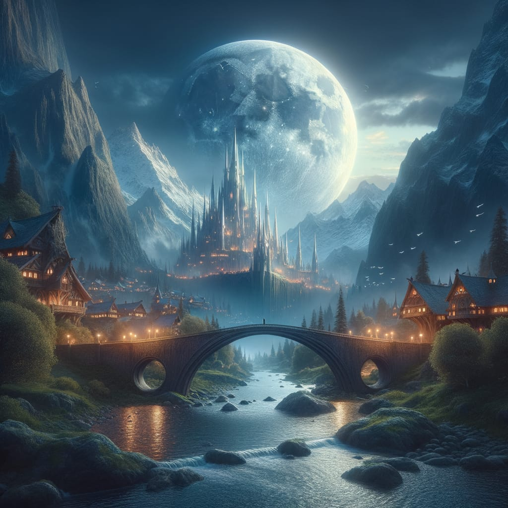
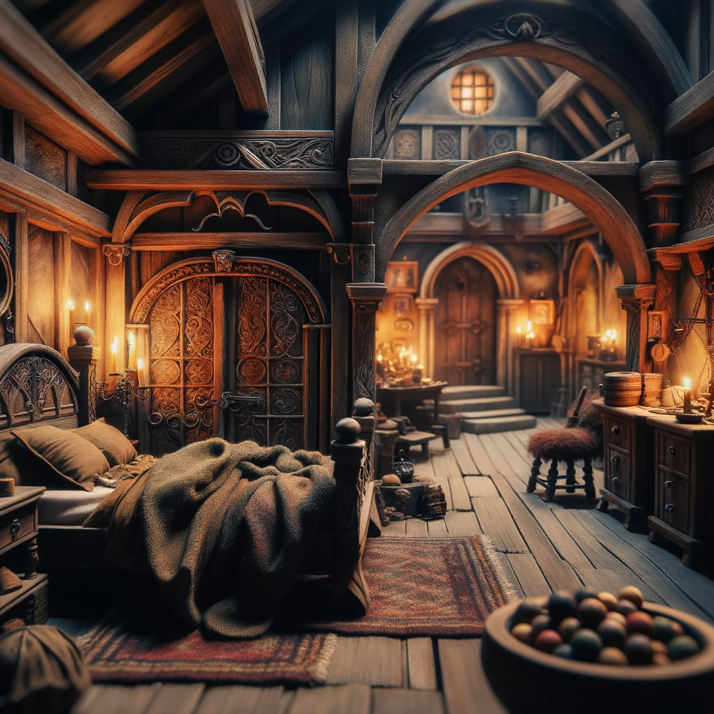
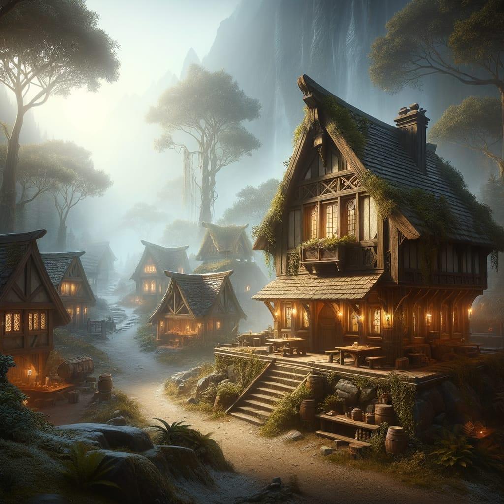

Escape to the Gem of the North!
Silverymoon, the magical jewel of the Sword Coast, invites adventurers to unwind beneath starlit skies. With its glowing bridges, ancient halls, and enchanted gardens, this serene city offers the perfect blend of rest, wonder, and just a hint of adventure.
The City's Marvels
- The Moonbridge
- Conclave of Silverymoon
- The Vault of the Sages
- The Bright Blade Brandished tavern
Magical Amenities
- Spa of Restoration (auto-healing)
- Anti-scrying Cabins (for paranoid adventurers)
- Herbal Rejuvenation Pools
Beds, Brews & Bard Songs
After a long day of adventuring, there's no better way to unwind than with a warm bed, a cold drink, and a tavern filled with tales and tunes. From cozy inns with featherfall pillows to rowdy halls echoing with bardic ballads, Silverymoon offers lodging for every kind of traveler.
  Book your stay